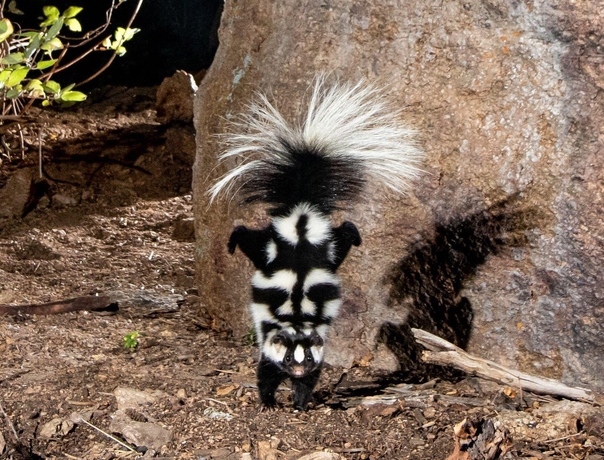
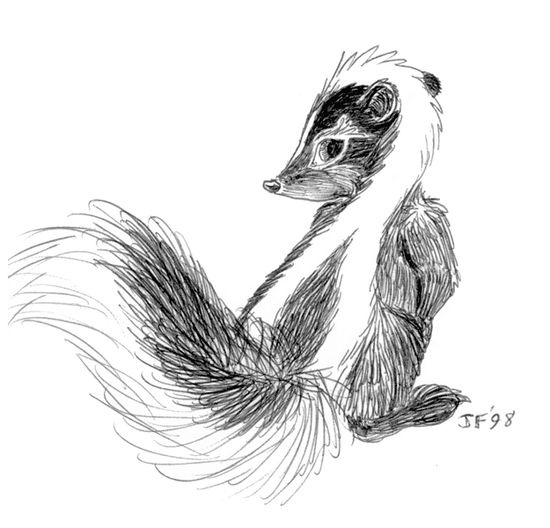

Misconceptions:
Skunks are mild-tempered, mostly nocturnal, small mammals. Skunks are often misunderstood when it comes to their defense mechanisms, as they only spray when being attacked. Even when other animals or people are in close proximity, skunks will ignore the intruders unless they are disturbed.
Good for the Enviroment
Skunks are especially beneficial to farmers, gardeners, and landowners as they feed on pests. While young skunks are cute and kitten-like, they are wild animals and it is illegal to keep them as pets.
